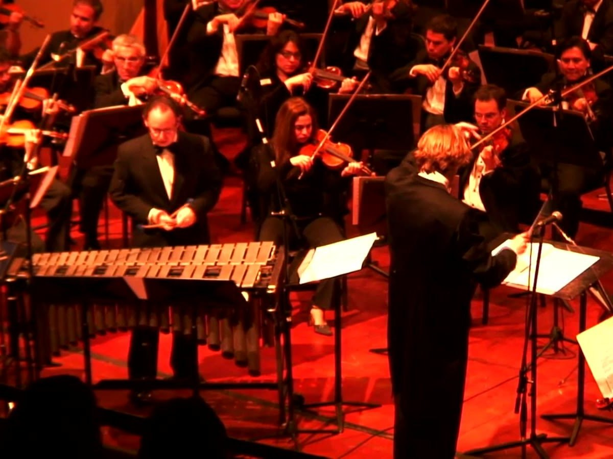
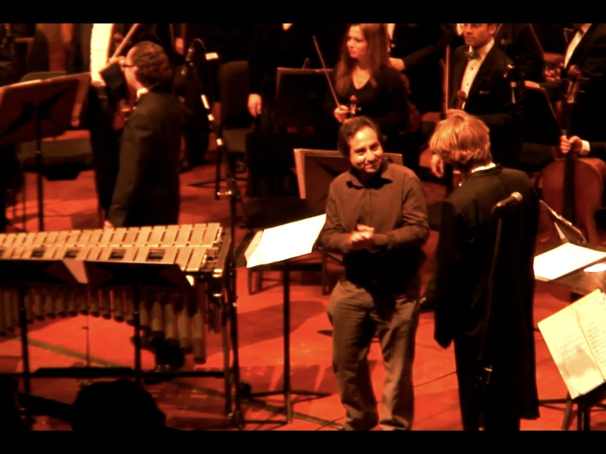
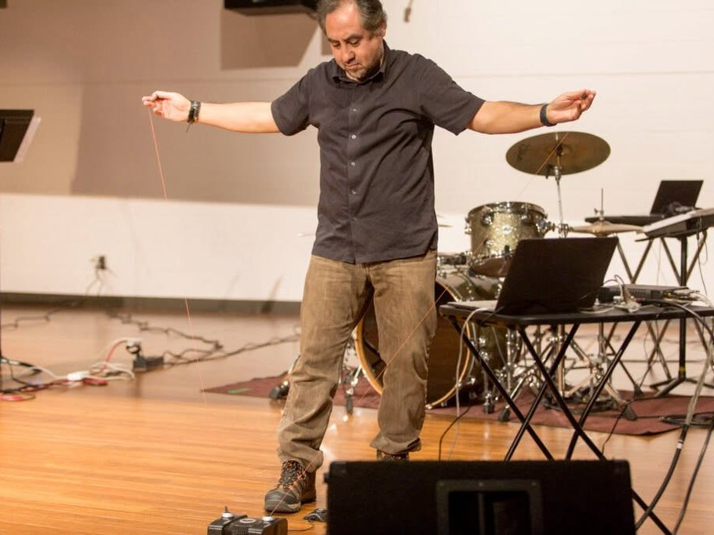
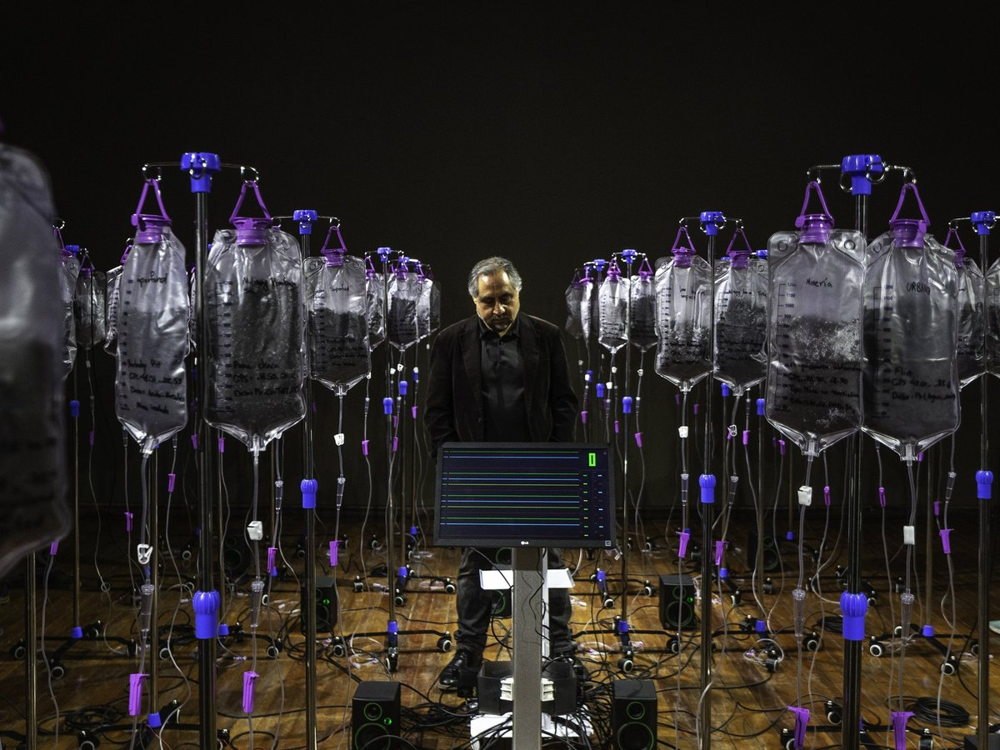
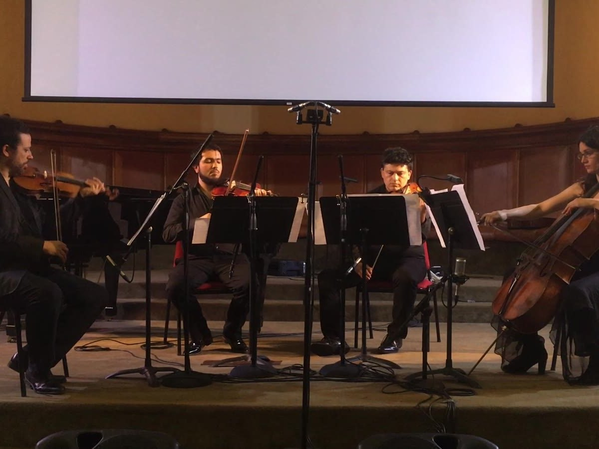
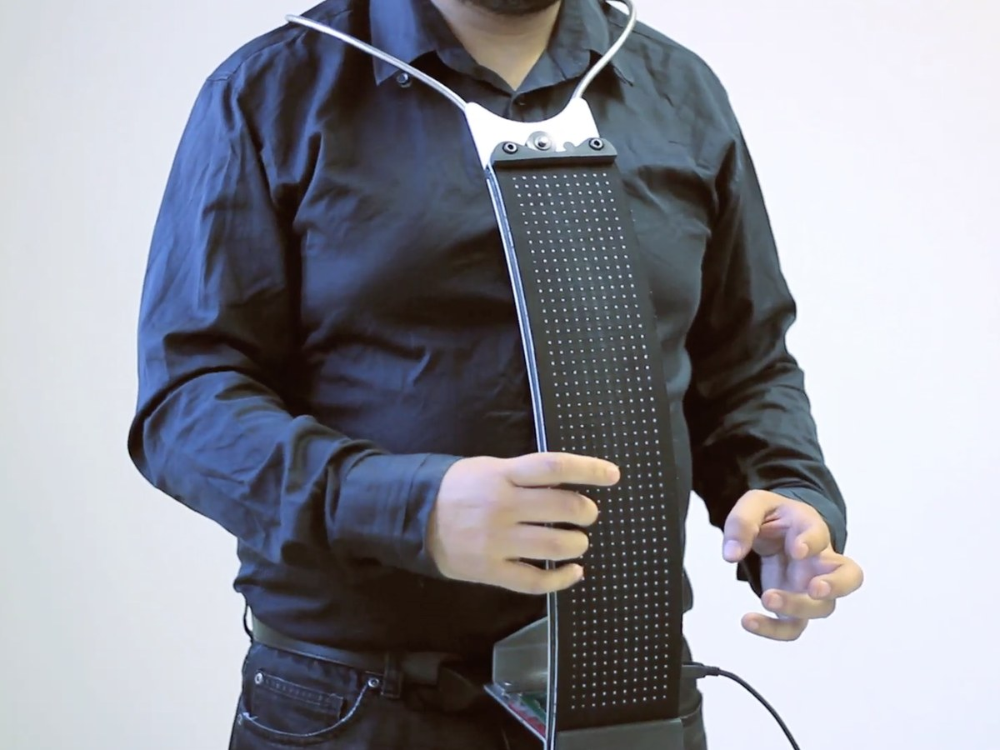
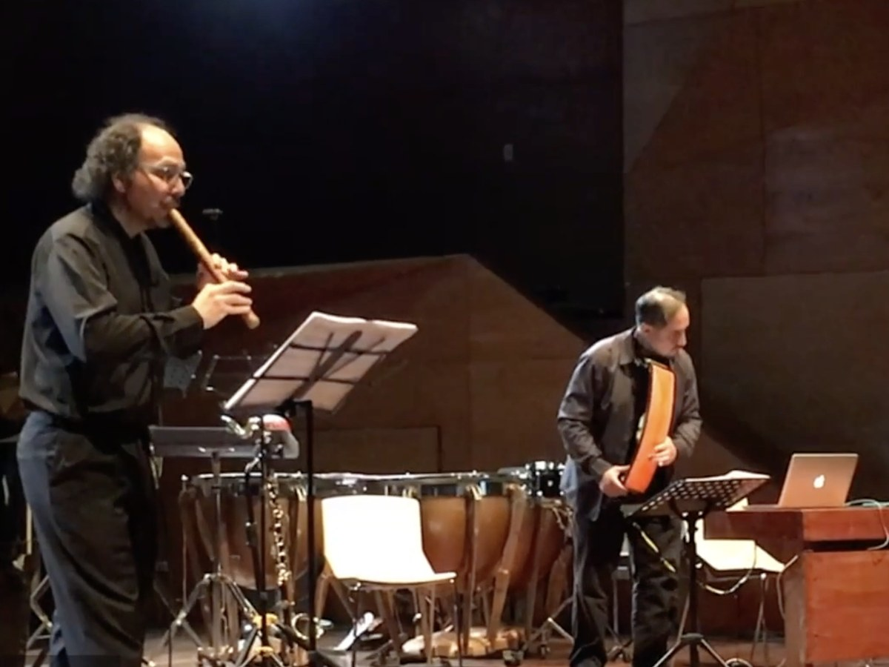
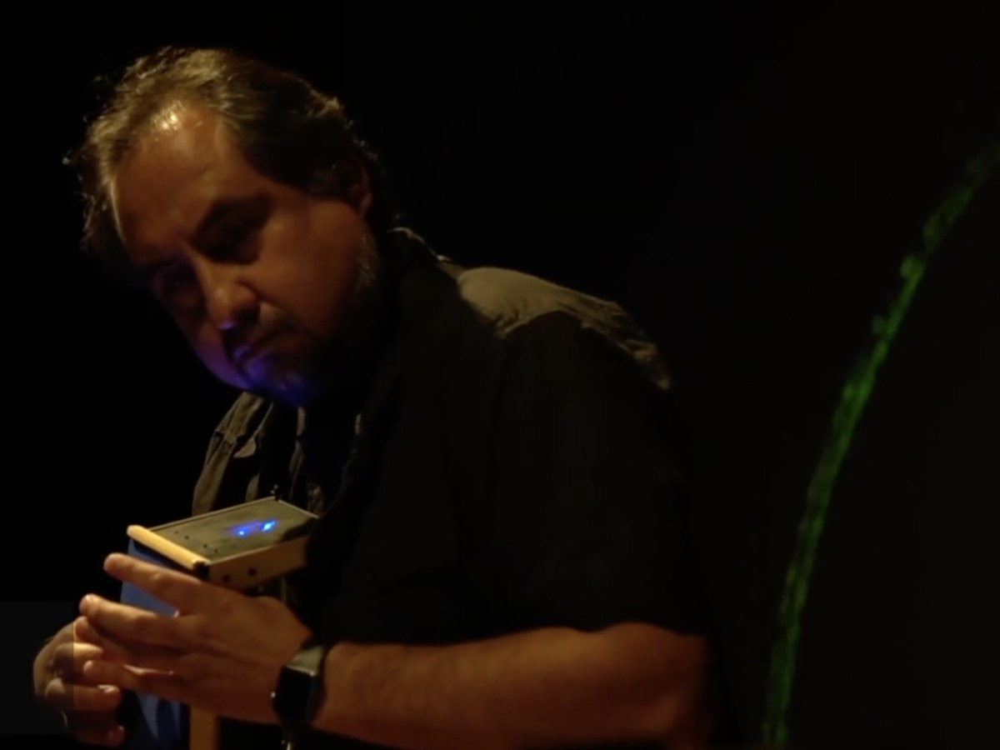
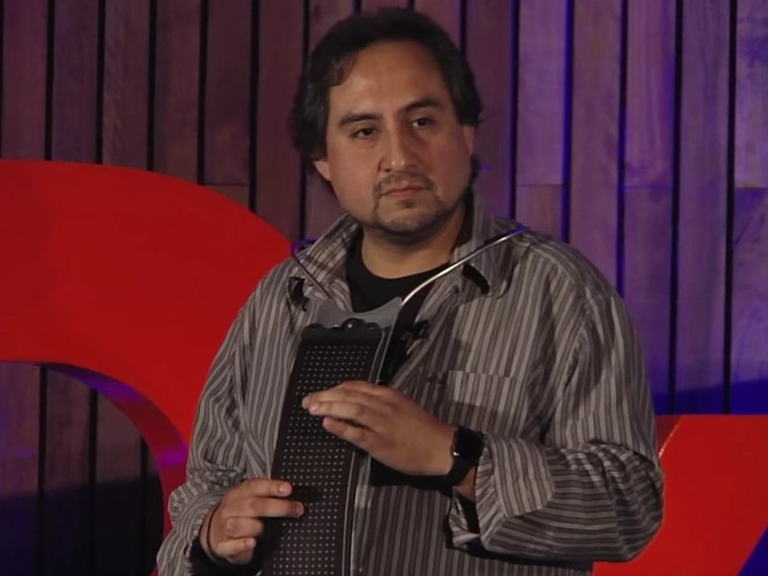
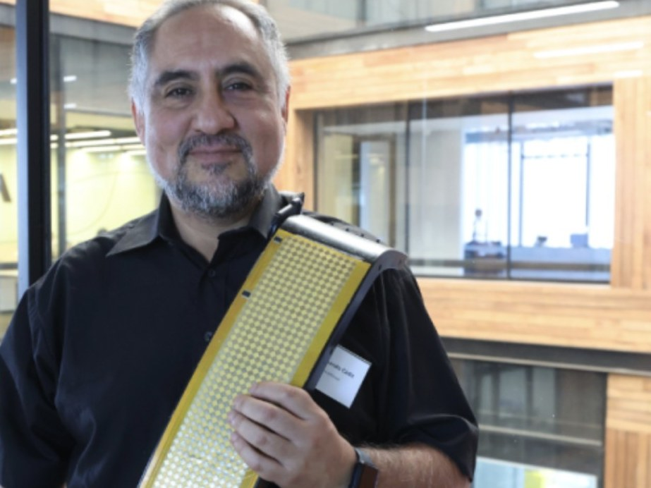

WorksObras 1 / 59 Catalogue of 72 worksCatálogo de 72 obras
ComposerCompositorResearcherInvestigadorInnovatorInnovadorProfessorProfesor
Bio ConcertsConciertos PressPrensa TalksCharlas PublicationsPublicaciones ContactContacto
Composer and electrical engineer. Ph.D. in Music Technology, Northwestern University. Full Professor of music and of electrical engineering at the Pontificia Universidad Católica de Chile, on the faculty since 2006.Compositor e ingeniero eléctrico. Doctor en Tecnología Musical, Northwestern University. Profesor Titular de música y de ingeniería eléctrica en la Pontificia Universidad Católica de Chile, académico desde 2006.
Director of the Núcleo Milenio Animupa, co inventor of the Arcontinuo, director of the UC Laptop Orchestra (OLUC), and founder and director of the Festival de Música Electroacústica UC.Director del Núcleo Milenio Animupa, co inventor del Arcontinuo, director de la Orquesta de Laptops UC (OLUC), y fundador y director del Festival de Música Electroacústica UC.
Vice President for Conferences of the International Computer Music Association. Excellence in Artistic Creation Prize UC, 2019. Best Paper Award, ICMC 2023.Vicepresidente de Conferencias de la International Computer Music Association. Premio a la Excelencia en la Creación Artística UC, 2019. Best Paper Award, ICMC 2023.
72 works since 199672 obras desde 1996









